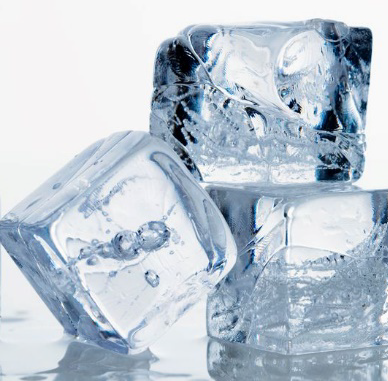
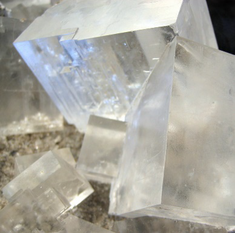
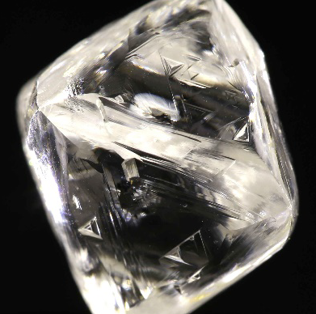
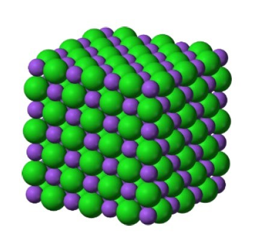
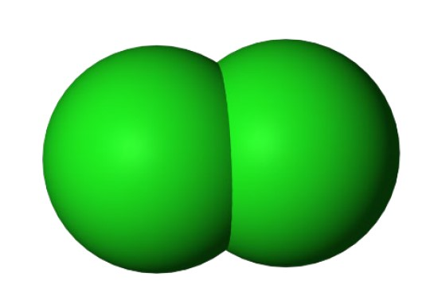
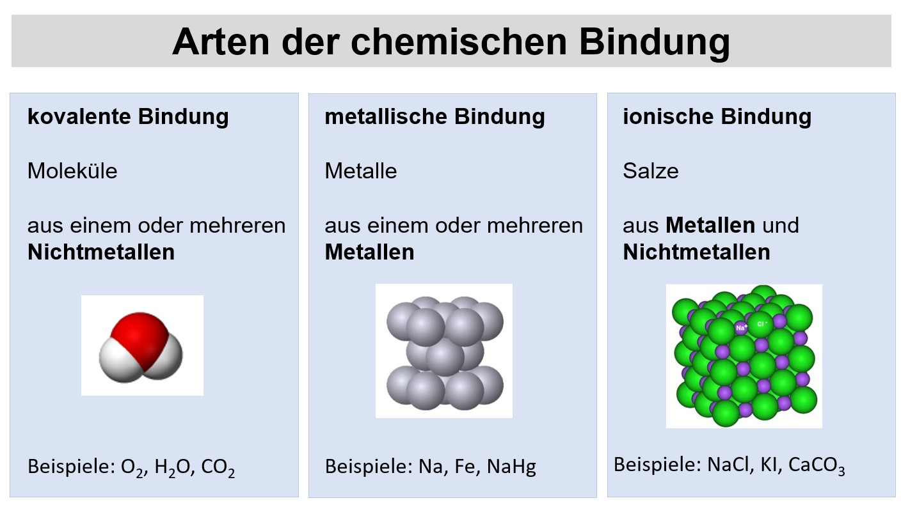

Vertiefung und Ausblick
Repetition der Phasen 1–3 und ein erster Blick auf die chemische Bindung
Repetition und Synthese
Lernziele
- Sie können die zentralen Konzepte aus den Phasen 1–3 in eigenen Worten erklären.
- Sie können das Coulomb-Gesetz verwenden, um den Atombau, die Trends im PSE und die Bindungstendenz zu begründen.
- Sie können die vier Atommodelle (Dalton → Rutherford → Bohr → Orbitalmodell) ordnen und ihre Stärken und Grenzen nennen.
- Sie können gemischte Aufgaben aus dem ganzen Thema selbständig lösen.
Bevor wir uns in Lektion 12 mit der chemischen Bindung beschäftigen, halten wir kurz inne und schauen, was Sie aus den ersten drei Phasen mitnehmen sollten. Die folgenden acht Konzepte bilden das Fundament für alles, was in der Chemie noch kommt — vom Periodensystem über Reaktionen bis hin zur organischen Chemie.
11.1 Die zentralen Konzepte auf einen Blick
Kern-Hülle-Modell
Das Atom besteht aus einem winzigen, positiv geladenen Kern und einer fast leeren Hülle mit Elektronen. Belegt durch den Rutherford-Streuversuch.
Coulomb-Gesetz
Anziehung zwischen Ladungen: je grösser die Ladungen, je kleiner der Abstand, desto stärker die Kraft. Erklärt Atomradius, Ionisierungsenergie, Elektronegativität und am Schluss auch die chemische Bindung.
Elementarteilchen & Isotope
Protonenzahl bestimmt das Element, Neutronenzahl variiert (Isotope), Elektronen machen das Atom neutral. Nuklidsymbol: ᴬZX.
Schalenmodell (Bohr)
Elektronen besetzen Schalen K, L, M, N mit definierten Energieniveaus (max. 2n² e⁻). Erklärt Ionisierungsenergie-Stufen und Flammenfärbung.
Orbitalmodell
Innerhalb der Schalen gibt es Unterschalen s, p, d, f. Orbitale sind Aufenthaltsräume für max. 2 e⁻ (Pauli, Hund, Aufbauprinzip).
Elektronenkonfiguration
Verteilung der Elektronen auf die Orbitale, z. B. Na: 1s² 2s² 2p⁶ 3s¹. Die Auffüllreihenfolge erklärt den Aufbau des Periodensystems.
PSE & Trends
Periode = Schalenzahl, Hauptgruppe = Valenzelektronen. Atomradius ↓ rechts, ↑ unten; Ionisierungsenergie und Elektronegativität verhalten sich umgekehrt.
Valenzelektronen & Lewis
Die äusseren Elektronen bestimmen das chemische Verhalten. sp³-Hybridisierung liefert 4 gleichwertige Plätze → Lewis-Punkte ums Symbol. Atome streben Edelgaskonfiguration an.
11.2 Das Coulomb-Gesetz — der rote Faden
| Coulomb-Gesetz | |
|---|---|
| F = k · Q1 · Q2r2 |
F: elektrostatische Kraft Q1, Q2: Ladungen der Körper r: Abstand zwischen den Körpern k: Konstante (abhängig vom Medium: Vakuum, Luft, Wasser, …) |
Das Coulomb-Gesetz ist die einzige «physikalische» Formel, die wir im Atombau wirklich brauchen — und sie erklärt erstaunlich viel:
| Phänomen | Coulomb-Erklärung |
|---|---|
| Atomradius nimmt nach rechts ab | Mehr Protonen → höhere Kernladung → stärkere Anziehung der Elektronen → kleinerer Radius. |
| Atomradius nimmt nach unten zu | Neue Schale → grösserer Abstand r → schwächere Anziehung → grösserer Radius. |
| Ionisierungsenergie | Je stärker die Anziehung Kern–Elektron, desto mehr Energie nötig, um es zu entfernen. |
| Elektronegativität | Mass dafür, wie stark ein Atom in einer Bindung die gemeinsamen Elektronen anzieht — das Coulomb-Gesetz in Aktion. |
| Chemische Bindung (Lektion 12) | Alle drei Bindungstypen beruhen auf Coulomb-Anziehung — nur die geometrische Anordnung der Ladungen unterscheidet sich. |
Wenn Sie sich eine Idee aus dem ganzen Thema Atombau merken können, dann diese: Chemie ist im Kern Coulomb-Anziehung zwischen positiven und negativen Ladungen. Alle anderen Konzepte (Schalen, Orbitale, EN, Bindungstypen) sind Werkzeuge, um diese Anziehung greifbar zu machen.
11.3 Modellvergleich
Im Verlauf der Geschichte hat sich unser Bild vom Atom mehrfach verändert — immer dann, wenn ein Modell ein neues Experiment nicht mehr erklären konnte. Hier die vier wichtigsten Stationen:
Dalton
Rutherford
Bohr
Orbitalmodell
Jedes Modell hat seine Berechtigung und wir verwenden unterschiedliche Modelle, um unterschiedliche Phänomene zu beschreiben. Modelle sind Werkzeuge, keine Abbilder der Wirklichkeit.
11.4 Repetitionsaufgaben über das ganze Thema
Die folgenden 10 Aufgaben decken den Stoff der Phasen 1–3 in gemischter Form ab. Sie finden Sie im Klassennotizbuch. Lösen Sie zuerst selbständig — die Lösungen werden in der Lektion besprochen.
Ausblick: Die drei Bindungstypen
Lernziele
- Sie können die drei Bindungstypen (ionisch, metallisch, kovalent) benennen und ihre Voraussetzungen unterscheiden.
- Sie können anhand der Elektronegativität entscheiden, welcher Bindungstyp zwischen zwei Elementen vorliegt.
- Sie können für die drei Prototypen NaCl, Cu und H₂O je ein einfaches Modellbild beschreiben.
12.1 Wieso überhaupt eine Bindung?
Schauen Sie sich diese drei Stoffe an. Sie sehen alle drei kristallin und klar aus — und doch verhalten sie sich völlig unterschiedlich:



| Stoff | Wasser (Eis) | Natriumchlorid | Diamant |
|---|---|---|---|
| Formel | H₂O | NaCl | C |
| Schmelztemperatur | 0 °C | 801 °C | ca. 4 000 °C |
Wie kann es sein, dass so ähnlich aussehende Stoffe so unterschiedliche Eigenschaften haben? Die Antwort liegt auf der Ebene der Bindungen zwischen den Teilchen. Genau dort steigen wir jetzt ein.
Atome gehen Bindungen ein, weil sie damit eine edelgasähnliche Elektronenkonfiguration erreichen — also einen Zustand niedriger Energie. Die Edelgasregel, die Sie aus Phase 3 kennen, ist der Antrieb hinter jeder chemischen Bindung.
12.2 Elektronegativität entscheidet
Ob zwischen zwei Atomen eine ionische, metallische oder kovalente Bindung entsteht, hängt von ihrer Elektronegativität (EN) ab. Erinnern Sie sich:
- Metalle haben tiefe EN-Werte (typisch < 2,0) → «Elektronenopfer», geben Elektronen leicht ab.
- Nichtmetalle haben hohe EN-Werte (typisch > 2,0) → «Elektronenräuber», ziehen Elektronen stark an.
Aus diesen zwei Gruppen lassen sich drei Kombinationen bilden — und genau diese drei Kombinationen ergeben die drei Bindungstypen:
| Nichtmetall (Räuber) | Metall (Opfer) | |
|---|---|---|
| Nichtmetall (Räuber) | kovalente Bindung | ionische Bindung |
| Metall (Opfer) | ionische Bindung | metallische Bindung |
12.3 Die drei Bindungstypen im Überblick
Ionische Bindung

Das Nichtmetall entreisst dem Metall seine Valenzelektronen. Es entstehen Kationen (+) und Anionen (−), die sich gegenseitig anziehen und im Ionengitter anordnen.
Prototyp: NaClKovalente Bindung

Treffen zwei oder mehrere Elektronenräuber aufeinander, so können keine Elektronen abgegeben werden, sie müssen diese vielmehr untereinander aufteilen. Verbinden sich beispielsweise zwei Chloratome miteinander, so ziehen beide Atomkerne die Valenzelektronen beider Atome an. Diese Anziehung der Valenzelektronen durch beide Kerne führt dazu, dass die Atome in einem kleinen Abstand zueinander bleiben. Diese Art chemischer Bindung wird als kovalente Bindung bezeichnet [lat. co(n) = mit, valentia = Kraft, Stärke].
Prototyp: H₂O, CO₂, O₂12.4 Übersichtstabelle
Die folgende Tabelle aus dem MINT-Skript fasst die drei Bindungsarten kompakt zusammen:

12.5 Welche Bindung liegt vor? — Interaktiv
Wenden Sie das Gelernte an. Klicken Sie auf die Antwort, die Sie für richtig halten — Sie erhalten direkt Feedback.
Bestimmen Sie den Bindungstyp
Tipp: Schauen Sie zuerst, welche Art von Elementen beteiligt sind (Metall / Nichtmetall).
Wie geht es weiter?
Mit der chemischen Bindung verlassen wir die Welt der einzelnen Atome und betreten die Stoffchemie. Ab jetzt geht es um echte Stoffe — wie sie aufgebaut sind, wie sie miteinander reagieren, welche Eigenschaften daraus entstehen.
Damit ist das Thema Atombau abgeschlossen.
Vielen Dank für Ihre Aufmerksamkeit und Ihr Engagement.